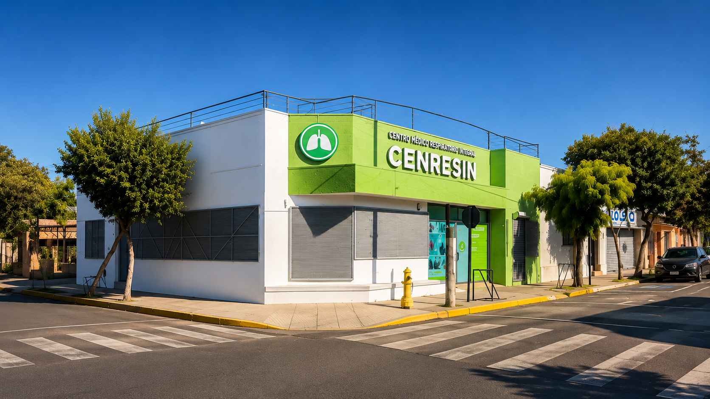

Todo CENRESIN en un solo lugar.
El inicio funciona como índice general de la web: desde aquí puedes conocer el centro, revisar profesionales, especialidades, exámenes, estudios clínicos, pacientes, patrocinadores y contacto.

Rutas de navegación
Accesos directos según el tipo de usuario que llega a la web.
Necesito un examen
Revisa el catálogo de exámenes disponibles.
Busco un profesional
Conoce al equipo y sus áreas de atención.
Quiero agendar o consultar
Teléfonos, WhatsApp, dirección y formulario.
Quiero participar en un estudio
Información para pacientes interesados.
Soy patrocinador o CRO
Capacidades e infraestructura del centro.
Quiero conocer CENRESIN
Propósito, equipo y estándar de atención.
Índice rápido
Elige qué necesitas conocer. Cada botón lleva a una pestaña independiente de la web.
Quiénes Somos
Equipo humano, enfoque institucional y áreas de gestión.
🩺Profesionales
Fichas del equipo médico, clínico y administrativo.
🏥Centro Médico
Especialidades, atención clínica y bienestar integral.
🔬Exámenes
Función pulmonar, cardiología, nutrición e imagenología.
🧪Estudios Clínicos
Investigación respiratoria con seguridad y calidad.
🙋Pacientes
Cómo participar, seguridad, confidencialidad y preguntas frecuentes.
🤝Patrocinadores / CROs
Capacidades, infraestructura y evaluación de factibilidad.
📍Contacto
Dirección, teléfonos, WhatsApp, horario y formulario.
Dos áreas, una misma misión
CENRESIN integra atención médica especializada e investigación clínica para acompañar a pacientes y aportar al avance de la medicina respiratoria.
Centro Médico
Atención de especialidad, diagnóstico avanzado y bienestar integral para niños, adultos y adultos mayores.
- Broncopulmonar adulto e infantil
- Medicina general y general infantil
- Cardiología, nutrición y psicología
Estudios Clínicos
Investigación clínica en enfermedades respiratorias con enfoque en seguridad, ética y calidad de datos.
- Asma, EPOC y patologías respiratorias
- Participación voluntaria y supervisada
- Colaboración con patrocinadores y CROs

Juana Pavie Gallegos
Más de 30 años de compromiso con la salud respiratoria y el bienestar de la comunidad.
La historia de CENRESIN está estrechamente vinculada a la trayectoria de Juana Pavie Gallegos, fundadora del centro y una de las principales impulsoras de la atención respiratoria especializada en Quillota.
Durante más de tres décadas ha trabajado promoviendo el acceso a una atención médica cercana, humana y de excelencia, contribuyendo al desarrollo de programas de salud, educación para pacientes e iniciativas orientadas al bienestar de la comunidad.
Su visión permitió consolidar un centro que hoy integra atención médica especializada e investigación clínica, manteniendo siempre el compromiso con las personas y la calidad en cada proceso.
¿Necesitas orientación?
Puedes contactarnos para resolver dudas sobre atención médica, exámenes o participación en estudios clínicos.